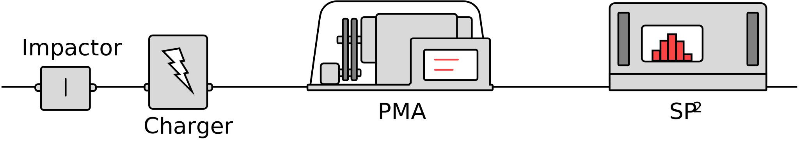

PMA-SP2 Optimizer
This simple web app is designed to estimate the optimal experimental parameters for tandem PMA-SP2 experiments. The app uses data from Naseri et al. (2021).

Optimal experimental parameters are chosen as the minimum simulated error for a specific range about those chosen input parameters. For the number concentration, the range is up and down by a factor of sqrt(10), thus spanning an interval of an order of magnitude. For time, the app considers any simulation with a time below that specified. In other words, if the optimal simulation occurs in half the time, that simulation is shown in the output. For the correlation, specifying the width of the mp-mrBC distribution, the range if shown explicitly in the dropdown menu.
Inputs
Recommended parameters
Lowest error of simulations